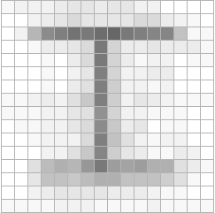
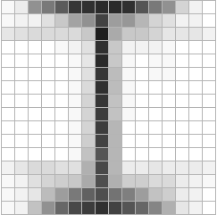
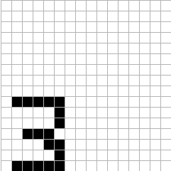
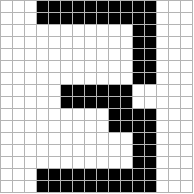

Nous avons commencé par chercher une librairie qui permet de créer un réseau de neurones. Nous avons essayé PyBrain, Theano et NeuroLab. Nous avons abandonné rapidement Theano parce qu’il est trop compliqué à utiliser. Nous avons utilisé PyBrain au départ.
Nous avons utilisé Pygame et Image pour l’interface graphique. Ce fut plus facile pour nous de faire la grille et les interactions. La première dimension qu’on a donnée à la grille était de 48 carrés par 48 carrés. Nous avons rencontré des problèmes de performances avec l’apprentissage du réseau de neurones parce qu’il y avait trop d’éléments à traiter. Nous avons diminué la dimension de la grille à 16 carrés par 16 carrés.
Une fois l’interface graphique implémentée, nous avons ajouté une fonctionnalité qui nous a permis de rapidement dessiner et enregistrer des caractères en appuyant sur la touche correspondante. Par exemple, en dessinant un « 2 » et ensuite en appuyant sur la touche « 2 », les données de la grilles sont enregistrées dans un fichier texte en tant qu’une suite de « 0 » et de « 1 ». La grille est ensuite réinitialiser pour nous permettre de passer à un autre caractère rapidement. Nous avons ainsi dessiné plus de 2000 caractères
Nous avons donné l’information des caractères au réseau de neurones (appelé « cerveau »). Le premier essai était de lui faire apprendre 36 caractères dans un seul cerveau. Cela a échoué car il y avait trop d’éléments à apprendre en même temps.
La deuxième tentative fut de créer plusieurs cerveaux qui regroupent des caractères qui se ressemblent et un cerveau central qui fait le lien avec ces cerveaux. Nous croyions qu’avec cette manière de faire, que l’efficacité de l’apprentissage augmenterait à un niveau permettant d’avoir des résultats pertinents. Le réseau de neurones a fait du sur-ajustement, c’est-à-dire que les cerveaux donnaient les résultats attendues lorsqu’on lui donnait un caractère qu’il connaît, mais dès qu’on lui donnait un nouveau caractère, la liste de caractères proposé montrait des caractères inattendus (exemple : l’utilisateur dessine un « 8 » et le second choix proposé est un « M »).
Nous avons ensuite tenté de faire plusieurs cerveaux qui regroupent des caractères qui se diffèrent. Dans cette expérimentation, il y a eu moins de sur-ajustement, mais la reconnaissance des caractères était faible (exemple : l’utilisateur dessine un « R » et le premier choix proposé est un « K » et le « R » est suggéré en quatrième choix).
Nous avons changé pour NeuroLab et avons ressayé ces étapes d’expérimentation. Avec les cerveaux qui regroupent des caractères similaires, nous avons eu des résultats qui correspondent à ce qu’on souhaitait.
Nous avons rencontré un problème lorsque nous avons tenté d’entraîner les cerveaux, les caractères ne se ressemblaient pas dû à leur positionnement et leur taille lorsque nous avons dessiné les 2000 caractères. Nous avons remédié à ce problème en redimensionnant et en centrant tous les caractères. Par exemple, voici la moyenne de tous les « I » que nous avions dessinés, avant et après l’ajustement :
 De cette façon, le caractère est automatiquement redimensionné avant d’être envoyé dans les cerveaux, ce qui permet à l’utilisateur de dessiner un caractère de la taille qu’il veut, et où il désire. Par exemple, voici ce que l’utilisateur dessine (à gauche) et voici ce que les cerveaux reçoivent (à droite) :
 Ce processus est entièrement transparent à l’utilisateur.